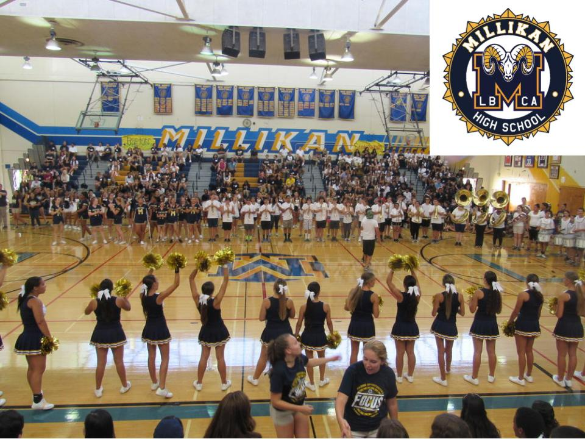
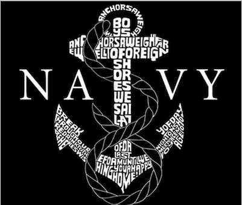

Future Highschool:
I would love to attend Millikin High School in their Quest program. I am really wanting the challenge of taking AP classes. Millikin just has an atmosphere I really think would work for the type of learning I enjoy. Also, their surf and dance team are both exceptional so I would love to be able to be on those teams.

College:
My goal is for College is to attend a prestigious school like Yale, Harvard, West Point, or the Naval Academy Annapolis. Yale and Harvard both have amazing law programs and have graduated some of our U.S presidents. West Point and Annapolis are the most structured advanced military universities that would push my academic and physical strength to the next level to become a Navy Seal or EOD one day. I would love to graduate any of those colleges with a Doctorate degree.
Career Interests:
My career interests consists of becoming an FBI agent and helping keep citizens safe. Also, I could possibly want to be in politics and become a lawyer or judge in a court. Then maybe, have a party support me and run for the president of the United States. I am also interested in joining the Navy since I am in the military family and becoming a Seal or EOD.
